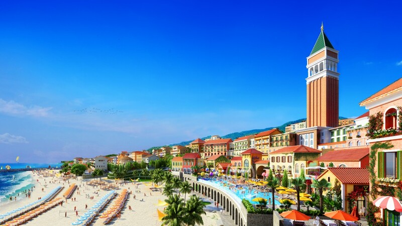
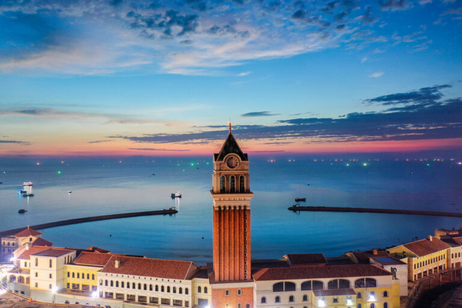
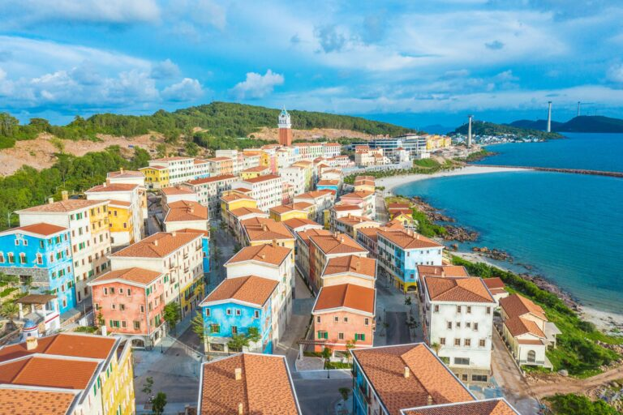
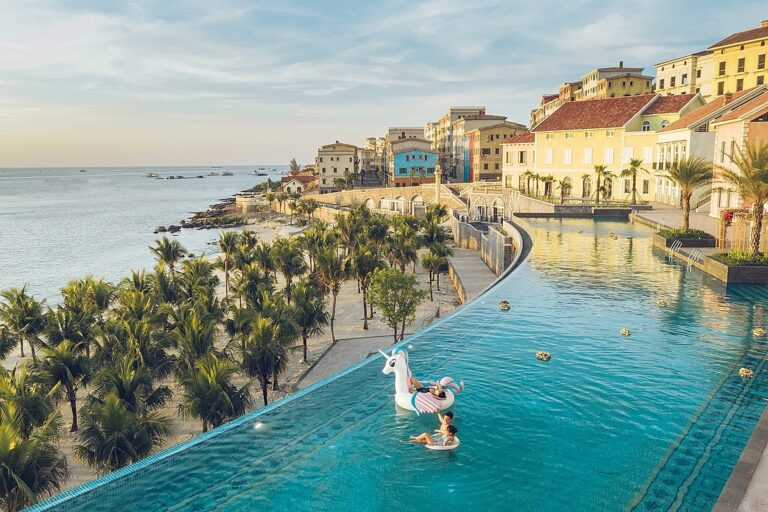
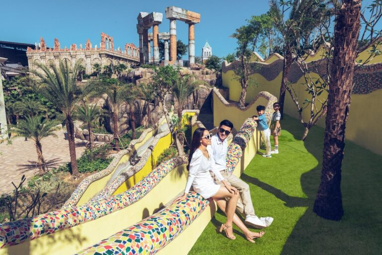
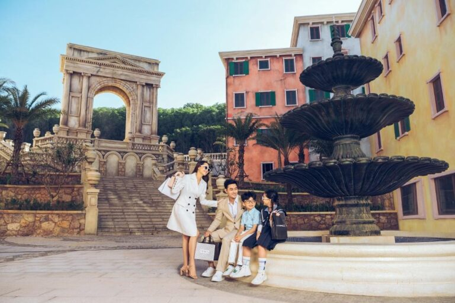

Du Lịch Phú Quốc
Khám Phá Thị Trấn Địa Trung Hải Phú Quốc
29/12/2022
Phú Quốc là một điểm đến thú vị được du khách trong nước lẫn nước ngoài yêu thích bởi vẻ đẹp cực kỳ cuốn hút. Đến với Phú Quốc bạn sẽ được trải nghiệm những cảnh quan ấn tượng, mới lạ cùng những bãi biển hoang sơ cho đến những kiến trúc hiện đại. Thị trấn Địa Trung Hải Phú Quốc là điểm tham quan được nhiều khách du lịch yêu thích. Vậy thị trấn Địa Trung Hải Phú Quốc là nơi như thế nào?
1. Thị trấn Địa Trung Hải ở đâu?
Thị trấn Địa Trung Hải Phú Quốc hay còn được gọi là Sun Premier Village Primavera nằm ở mũi ông Bốn, thị trấn An Thới, đảo Phú Quốc Tỉnh Kiên Giang - Khu vực phía nam của đảo. Thị trấn Địa Trung Hải Phú Quốc có tổng diện tích lên đến hơn 39 hecta. Đây là một quần thể du lịch - nghỉ dưỡng - giải trí của tập đoàn Sun Group.
2. Top 5 Điểm check in Địa Trung Hải Phú Quốc mà bạn không thể bỏ lỡ
2.1. Tháp đồng hồ Venice
Tháp đồng hồ Venice tọa lạc ngay tại trung tâm của thị trấn Địa Trung Hải Phú Quốc, có độ cao lên tới 75m. Kiến trúc này được lấy cảm hứng từ tòa tháp cao nhất nước Venice Ý. Dưới chân tháp là bể bơi vô cực trải dài rất thơ mộng và bạn có thể thoải mái check-in sống ảo tại đây.
2.2. Shophouse Địa Trung Hải Phú Quốc
Sun Group thay vì mời những thợ sơn bình thường, họ đã mời những họa sĩ thực hiện các kỹ thuật vẽ chuyên nghiệp nhằm khắc họa cho bước chân của thời gian. Mỗi một viên gạch, mỗi một vết tường lỡ hay dấu loang nước mưa trên màu sơn, tất cả những điều này đều được các họa sĩ tái hiện một cách sống động. Vì thế mà mỗi căn Shophouse là một bức tranh ấn tượng mang đầy nét cổ kính và nghệ thuật. Tại nơi đây không cần quá cầu kỳ, chỉ cần giơ điện thoại lên ở một góc bất kỳ là bạn đã có một tấm hình đẹp.
2.3. Bể bơi vô cực
Bể bơi vô cực là một địa điểm tuyệt vời để ngắm hoàng hôn. Ngoài ra, tại đây còn thường xuyên tổ chức các buổi diễn thời trang chuyên nghiệp. Một khi đã đắm mình vào làn nước trong xanh này rồi thì chắc chắn các bạn sẽ không quên được khoảnh khắc bềnh bồng, kỳ ảo mà vùng đất này mang đến.
2.4. Tàn tích Pompeii
Cái tên Pompeii là tên của một thành phố La Mã cổ đại miền nam nước Ý, thành phố này theo thời gian đã bị vùi lấp bởi tro bụi và đá bọt núi lửa. Tàn tích Pompeii là kiến trúc được phục dựng lại dựa theo thành phố Pompeii cổ đại nên mang nhiều âm hưởng Châu Âu thời kỳ hưng thịnh. Các kiến trúc có chiều cao lên đến hàng chục mét với các công trình cổ kính tựa như cánh cổng thời không.
2.5. Khải Hoàn Môn Gavi
Khải Hoàn Môn Gavi là cánh cổng tái hiện lại công trình rất nổi tiếng tại Paris. Điểm đến này nằm tại tiểu khu Sorrento của Shophouse Địa Trung Hải Phú Quốc, xung quanh đây là các căn nhà đa sắc, cổ kính, lạ mắt và có nhiều gian hàng mua bán khác nhau.
BÀI VIẾT GẦN ĐÂY

29/12/2022

17/12/2022

GÓP Ý